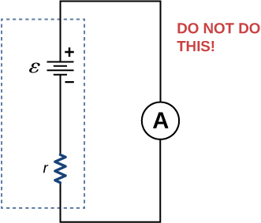
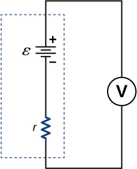

By the end of this section, you will be able to:
Ohm’s law and Kirchhoff’s method are useful to analyze and design electrical circuits, providing you with the voltages across, the current through, and the resistance of the components that compose the circuit. To measure these parameters require instruments, and these instruments are described in this section.
Whereas voltmeters measure voltage, ammeters measure current. Some of the meters in automobile dashboards, digital cameras, cell phones, and tuner-amplifiers are actually voltmeters or ammeters ([link]). The internal construction of the simplest of these meters and how they are connected to the system they monitor give further insight into applications of series and parallel connections.
To measure the current through a device or component, the ammeter is placed in series with the device or component. A series connection is used because objects in series have the same current passing through them. (See [link], where the ammeter is represented by the symbol A.)
Ammeters need to have a very low resistance, a fraction of a milliohm. If the resistance is not negligible, placing the ammeter in the circuit would change the equivalent resistance of the circuit and modify the current that is being measured. Since the current in the circuit travels through the meter, ammeters normally contain a fuse to protect the meter from damage from currents which are too high.
A voltmeter is connected in parallel with whatever device it is measuring. A parallel connection is used because objects in parallel experience the same potential difference. (See [link], where the voltmeter is represented by the symbol V.)
Since voltmeters are connected in parallel, the voltmeter must have a very large resistance. Digital voltmeters convert the analog voltage into a digital value to display on a digital readout ([link]). Inexpensive voltmeters have resistances on the order of whereas high-precision voltmeters have resistances on the order of . The value of the resistance may vary, depending on which scale is used on the meter.
You may encounter two types of meters in the physics lab: analog and digital. The term ‘analog’ refers to signals or information represented by a continuously variable physical quantity, such as voltage or current. An analog meter uses a galvanometer, which is essentially a coil of wire with a small resistance, in a magnetic field, with a pointer attached that points to a scale. Current flows through the coil, causing the coil to rotate. To use the galvanometer as an ammeter, a small resistance is placed in parallel with the coil. For a voltmeter, a large resistance is placed in series with the coil. A digital meter uses a component called an analog-to-digital (A to D) converter and expresses the current or voltage as a series of the digits 0 and 1, which are used to run a digital display. Most analog meters have been replaced by digital meters.
Check Your Understanding Digital meters are able to detect smaller currents than analog meters employing galvanometers. How does this explain their ability to measure voltage and current more accurately than analog meters?
Since digital meters require less current than analog meters, they alter the circuit less than analog meters. Their resistance as a voltmeter can be far greater than an analog meter, and their resistance as an ammeter can be far less than an analog meter. Consult [link] and [link] and their discussion in the text.
In this virtual lab simulation, you may construct circuits with resistors, voltage sources, ammeters and voltmeters to test your knowledge of circuit design.
An ohmmeter is an instrument used to measure the resistance of a component or device. The operation of the ohmmeter is based on Ohm’s law. Traditional ohmmeters contained an internal voltage source (such as a battery) that would be connected across the component to be tested, producing a current through the component. A galvanometer was then used to measure the current and the resistance was deduced using Ohm’s law. Modern digital meters use a constant current source to pass current through the component, and the voltage difference across the component is measured. In either case, the resistance is measured using Ohm’s law where the voltage is known and the current is measured, or the current is known and the voltage is measured.
The component of interest should be isolated from the circuit; otherwise, you will be measuring the equivalent resistance of the circuit. An ohmmeter should never be connected to a “live” circuit, one with a voltage source connected to it and current running through it. Doing so can damage the meter.
What would happen if you placed a voltmeter in series with a component to be tested?
The voltmeter would put a large resistance in series with the circuit, significantly changing the circuit. It would probably give a reading, but it would be meaningless.
What is the basic operation of an ohmmeter as it measures a resistor?
Why should you not connect an ammeter directly across a voltage source as shown below?
The ammeter has a small resistance; therefore, a large current will be produced and could damage the meter and/or overheat the battery.
Suppose you measure the terminal voltage of a 1.585-V alkaline cell having an internal resistance of by placing a voltmeter across its terminals (see below). (a) What current flows? (b) Find the terminal voltage. (c) To see how close the measured terminal voltage is to the emf, calculate their ratio.
